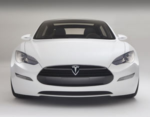

TESLA MOTORS
Tesla Motors will use its DOE funds to finance a manufacturing facility for the Tesla Model S, an all-electric sedan that takes three to four hours to charge using a 240-volt outlet, or as few as 45 minutes using a 480-volt outlet.